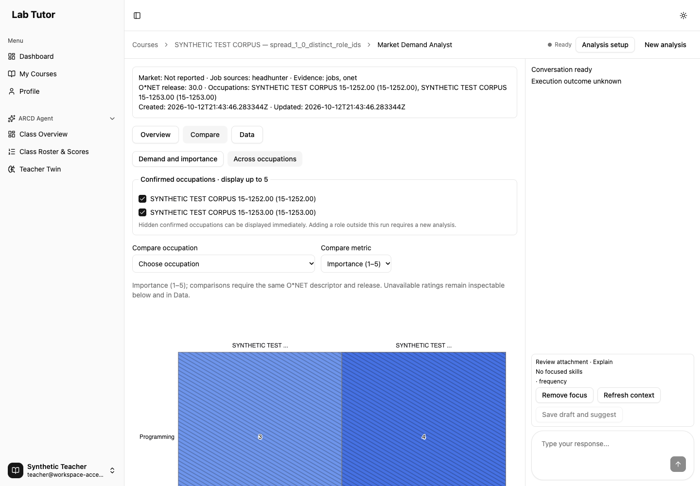

Inspect evidence. Choose skills. Discuss with the agent.
Implemented · verifiedThe Market Demand Analyst workspace places database-backed charts in the main area and the agent conversation on the right.
The implementation and final corrections are committed. The whole-branch review and one focused correction review are complete; both product findings are closed.
Explore the evidence
- Overview shows posting demand and eligible patterns.
- Compare shows O*NET importance (1–5) and required level (0–7) for eligible matches and confirmed occupations.
- Data offers exact values and keyboard-accessible inspection.
- Open a skill to inspect its original job links, posting evidence and rating provenance.
Build a shortlist together
- Select whole categories and exclude individual skills.
- Undo local changes and save a draft.
- Stage a chart question, send it when ready, and review the agent’s proposed shortlist.
- Keep drafting a follow-up while the reply arrives, then send it when ready.
- Use the existing teacher approval step before publishing to students.
What each source contributes
Stored job postings provide market evidence and original links. O*NET provides occupational references and importance or level ratings for valid equivalent matches. Missing, suppressed, related-only and software references remain clearly identified.
Every published student skill still requires qualifying job evidence and its original posting link. An incomplete candidate may remain in a teacher draft.
Verified behavior
| Check | Result | Evidence |
|---|---|---|
| Browser/API/SQL acceptance | 16 historical phases at d1a3660 | Chart clicks, selection, posting evidence purge, recovery, approval and student records. Original interruption and named-phase continuation retained. |
| Occupation chart layout | 2–5 occupations exercised | The added 36 three/four-occupation cases cover 320/390/768px, light/dark and all three chart types. Actual headers and full tooltips fit. |
| Occupation metadata compatibility | Passed at 62ab13e | Authenticated missing/null/blank title reads, unchanged persisted configuration and normal review/chart equality. |
| Typing during a reply | Desktop and phone passed | 1440/390px native input while a deterministic model gate keeps the real response pending. One POST per send; follow-up retained after completion. Initial/workflow typing also checked through integrated user interaction. |
| Backend regression | 399 passed | 12 relevant files on the final source tree; 90 LangGraph deprecation warnings retained. |
| Frontend regression | 546 passed across 22 files | One file worker; unchanged assertions and five-second test limits. This final-tree run is separate from the historical parallel timeout. |
| Lint, types, build and parity | Passed | Ruff: 328 files. Frontend lint/build, browser syntax and identical 63-case corpus. Original 61 cases preserved; wrong/missing scale IDs added. Bundle warning retained. |
Final product correction: c69976a. The test receipts record base 064c035 plus exact source fingerprints, which match the committed files. Earlier browser proof keeps its original source heads. The old auto-waiting fill did not establish pending typing; the new controlled-gate check does. Historical failures and warnings remain in the detailed evidence.
Actual interface captures
Actual headless captures with controlled synthetic records in isolated PostgreSQL. Ratings supplemented from the reviewed test corpus are explicitly synthetic.


Compare and approval examples
These captures use labelled synthetic database fixtures. The test-corpus ratings illustrate the interface; they are not claimed as official O*NET occupational ratings.


Follow-up typing during a pending reply
Actual final-tree headless capture at 1440px. The synthetic external-model gate was still waiting when this text was entered through native keyboard input. SQL selection and publication were unchanged.

Validation and limits
Existing limitation: the Reading and Video Agent cards redirect to Home because their pages are missing in the baseline.
Legacy review lists retain their original importance ordering and raw reference values. The new Charts/Data views apply the qualified comparison rules.
The final product tests and focused browser proof passed. Temporary acceptance containers, graph volumes, SQL fixtures and private credentials were removed; original development services and the implementation worktree remain intact. Both whole-branch findings were corrected and closed by the focused re-review. One minor test-fixture race is deferred: concurrent model-gate JSON reads could make a future acceptance run flaky; the saved successful proof remains valid.
The original acceptance orchestration stopped on a narrowly identified disabled-Azure fixture log. Its successful named-phase continuation uses the same fixture; the original interruption remains in the detailed proof.
The acceptance environment uses real application routes, PostgreSQL and an isolated Neo4j graph. External HeadHunter, model, embedding and Azure boundaries are controlled. Live provider reliability and answer quality, production load, the exact historical parallel-timeout cause and full assistive-technology certification remain unverified.
Rulings I made · 41 decisions
Every ledger ruling is included below in its original order, including its cost if wrong.
- Ruling: Use scoped workspace Docker containers and lab_tutor_workspace_test for all backend test teardown — avoids modifying other projects or the original checkout — cost if wrong: environment/setup rework; product contracts unchanged.
- Ruling: Run narrow task suites plus Ruff during task iterations, then integrated regression at completion — current AGENTS instructions and approved plan request relevant verification; repeated broad suites would add unrelated noise — cost if wrong: a broader regression is discovered at final verification instead of earlier.
- Ruling: supply a dummy embeddings key to deterministic tests — constructor validation precedes the mocked embed function — cost if wrong: tests accidentally contact provider; external boundaries remain replaced and no real credential supplied.
- Ruling: Task 2 establishes strict workspace_context and mixed-configuration ChatRequest validation in routes; Task 3 consumes it for execution — Task 2 requires pre-model rejection contract tests and both tasks own routes sequentially — cost if wrong: narrow schema wiring rework, no graph/SSE behavior moved earlier.
- Ruling: Permit a narrow occupation_reference/repository.py fresh-read helper/option in Task2 fix — the approved context resolver injects that repository and must read current SQL facts; service must not bypass layering — cost if wrong: one repository/API compatibility adjustment, scoped consumer behavior preserved.
- Ruling: Task5 may update IntegrationReview.test.tsx harness at the two legacy SkillReviewPanel render sites — a fully controlled panel now requires its parent controller; preserve all integration/publication assertions and production APIs — cost if wrong: narrow harness rework, no product scope expansion.
- Ruling: Extend the reviewed backend pattern corpus with search-normalization regressions before Task6 mirrors it — uncovered approved-contract mismatch is not represented in original31 cases; byte-identical shared expected outputs remain mandatory — cost if wrong: corpus/selector adjustment, no threshold or API scope change.
- Ruling: Search uses normalized substring within each candidate name/alias/original label independently — spec says normalize search/labels but does not define joined alias-boundary matching; independent labels avoid inventing searchable compound names — cost if wrong: rare search spanning separate aliases changes; no demand denominator, selection or threshold changes.
- Ruling: Define edge trimming as ECMAScript WhiteSpace + LineTerminator after NFKC, then lowercase; preserve internal characters — browser native trim has this explicit standard set; Python normalizer will use the same explicit set. This resolves an ambiguous cross-language trim requirement with minimal behavior change — cost if wrong: rare leading/trailing Unicode search/label behavior changes on backend. Normative docs checked12October2026; scratch unicode-trim-docs.md. Extend literal corpus for U+0085/U+FEFF and Python-only U+001C–U+001F cases; do not alter thresholds or matching scope.
- Ruling: Task8 may adapt only the existing MarketDemandPage send call sites to explicit workflow SendCommand; Task9 may minimally wire its controlled ChatInput at that legacy page and update the four MarketDemand.test.tsx ChatInput harness sites — changed required interfaces otherwise leave existing consumers incompatible until Task11. Keep behavior assertions; Task11 owns layout and contextual page assembly — cost if wrong: narrow call-site/harness rework, no new router or page redesign in8/9.
- Ruling: WorkspaceConversation may receive the existing page-owned SkillReviewController as an injected prop for Save draft and suggest and proposal application — Task9 behavior needs returned saved revisions and local-only application; never instantiate a fallback controller/store inside conversation — cost if wrong: one component prop contract adjustment. Task11 wires the same controller to all panes.
- Ruling: Task8 may add only the workspace_review identity to agent-config.ts — its Record<AgentName,AgentIdentity> is exhaustive and the approved new wire agent requires a display identity; keep the established styles and no unrelated UI change — cost if wrong: one metadata entry adjusted or removed.
- Ruling: Task8 may update MarketDemandConfiguration.test.tsx only to add the new read-only execution-status API mock/default and explicit stream_end outcome for fixtures representing completed streams — required hook contract otherwise leaves the legacy configuration harness incomplete; preserve all behavior assertions — cost if wrong: narrow harness rework, no source configuration or layout behavior changes.
- Ruling: Task8 may align the same configuration test fixtures to coherent state/review run identities, including an empty review for a fixture representing an active run — the approved restore contract rejects mixed snapshots, and the existing fixtures predate that contract; preserve all configuration assertions and represent each intended phase accurately — cost if wrong: narrow test-fixture correction, not a production recovery relaxation.
- Ruling: Task8 may update MarketDemand.test.tsx only for new UseAgentStreamReturn mock fields, typed SendResult defaults and workflow-wrapper send expectations retaining original text — its explicitly typed hook fixture and authorized page call-site migration must compile and remain behavior-tested before Task11; no layout or contextual page changes — cost if wrong: narrow consumer-harness rework.
- Ruling: On a completed send, clear the submitted explicit focus/attachment only when that attachment is still unchanged, while preserving follow-up text typed during the reply; preserve an explicitly replaced attachment. Return an unchanged submitted proposal intent to Explain for the next question — combines the approved no-sticky-context rule with retained typed follow-up and prevents an unrequested second proposal — cost if wrong: narrow composer follow-up behavior rework. Exact unchanged text+attachment clears text; failed/uncertain commands remain retained. Task11 builds ordinary minimal Run Explain context from its current review.
- Ruling: Task11 page owns the actionable primary Start an analysis empty-state setup; Task10 panel owns the secondary reference-only browsing through its approved courseId/onAsk interface — the spec assigns both to the page's no-analysis state, and a standalone reference panel has no workflow-start callback. Do not add a no-op Start button or broaden the reference panel into workflow configuration — cost if wrong: one empty-state action placement/prop adjustment, no source/API contract change.
- Ruling: Commit Task12 acceptance assets and perform its fresh scoped review before the single final whole-branch review — the chosen subagent-driven execution uses stable commit ranges for both gates; this replaces the plan paragraph’s informal review-before-commit wording without reducing validation — cost if wrong: an extra acceptance/report commit needs correction or squashing before integration.
- Ruling: Use a fresh Task12-owned disposable Neo4j service for synthetic student/projection records, retaining real repositories and queries — student paths, resources and quiz mastery live in Neo4j, so A10 cannot be verified with PostgreSQL alone; the original prohibition applies to existing/external graphs, which remain untouched — cost if wrong: isolated container/fixture cleanup and acceptance rework, with no production data change.
- Ruling: Extend the original Task3 owner narrowly to cold checkpoint initialization in market graph/application lifespan plus focused real-DB startup regressions — the required browser restoration cannot complete when first-request checkpoint index setup waits on that same request’s auth transaction; initialize storage before serving authenticated requests, without eagerly requiring the LLM or bypassing real migrations — cost if wrong: startup/lifecycle rework or additional startup latency; no other-agent migration or production data change is authorized.
- Ruling: Supplement only the isolated acceptance SQL dataset with exact association/metric records from the existing reviewed 61-case corpus for two-role/shared/differing/ambiguous cases, labelled synthetic test provenance — the imported O*NET 31.0 fixture does not cover those cases; keep imported reference browsing intact and never represent corpus ratings as official data — cost if wrong: acceptance-fixture and expected-value rework; these checks prove storage/query/UI behavior, not production O*NET coverage.
- Ruling: Extend the original Task8 owner narrowly to partial-reset recovery in the stream hook and its MarketDemandPage reset bridge/tests — an acknowledged SQL-first/checkpoint-later failure can leave authoritative state and review empty while older checkpoint context remains; teachers need an explicit, confirmed retry even after reload, with ordinary edits and workflow replay still blocked — cost if wrong: recovery-state/UI contract rework or an incorrectly offered reset; preserve course/generation checks, busy ownership, normal coherence rules and acknowledgement-only clearing.
- Ruling: Treat retained workflow-only checkpoint history as part of the same partial-reset recovery requirement, while requiring proof that authoritative thread state is absent — ordinary workflow messages do not carry contextual run IDs, and a valid pre-run workflow can also have null run IDs; confirmed recovery must not publish the failed reset as editable or misclassify legitimate setup — cost if wrong: narrow restore/recovery discriminator and fixture rework, or an overly restrictive reset offer; preserve strict mixed-run checks and acknowledgement-only clearing.
- Ruling: Keep the existing Reading and Video Agent route redirects outside this Market Demand workspace change, and disclose them explicitly rather than claim all four workspaces function — base and current route lists are identical, their cards/configuration are unchanged, and the approved scope preserves other agents without implementing their missing pages — cost if wrong: a separate routing/workspace follow-up is required and teachers still cannot enter those two existing pages; verify the functioning Architect and Market routes and record the actual redirects as baseline limitations.
- Ruling: Count the initial Task7 review repair, posting-inspection repair and tooltip repair as three completed Task7 fix passes, and use a fresh Astra high implementer for this fourth bounded chart-layout repair — SDD escalates task-level fix rounds four and five, and actual browser evidence now covers the full remaining scatter/heatmap label set — cost if wrong: extra agent context and review cost or layout rework; ownership remains limited to the existing chart components/tests, with no source or selection contract change.
- Ruling: Continue the same fresh d1a3660 acceptance lifecycle after tightening the Architect fixture console classification to its exact companion message and verified presentations route/status/detail — this is the same controlled, disabled Azure boundary already documented, with no product change or weakened application assertion; rerun supplemental and finish remaining phases and full scoped regression — cost if wrong: an unrelated console failure could be misclassified, so generic Axios, network and 500 errors remain fatal and the original trace and fixture limitation must stay visible.
- Ruling: Extend the original Task1 owner narrowly to normalize missing occupation titles in detached review metadata using the stored occupation code, and make the readiness-marker test guard accept only the two explicit disposable test databases while verifying session/engine agreement — the existing code-only approval/student fixtures were valid before this metadata extension, and the isolated database is already required by Ruling1; preserve strict public DTOs, pinned identities, persisted config, approval/student behavior and destructive-test safety — cost if wrong: metadata compatibility or test-guard rework; no official occupation title is fabricated and no arbitrary database is authorized.
- Ruling: Retain the complete 16-phase browser acceptance proof at its actual d1a3660 commit and supplement it at 62ab13e with a focused authenticated metadata/unchanged-config check plus final full scoped regressions — the approved follow-up changes only detached missing-title display and an exact test-database guard, with normal metadata unchanged; earlier owned graph contents were legitimately replaced by regression fixtures and must not be described as current — cost if wrong: an interaction outside the isolated metadata change could require a new full browser lifecycle; keep commit/fixture/graph timelines explicit instead of implying all phases were rerun.
- Ruling: Diagnose the single frontend timeout with its exact file, then permit one rerun of the same prescribed suite with one file worker if the focused behavior passes — the first run has 541 passing checks and one unchanged five-second test timeout, so serialization can test contention without changing assertions or time limits — cost if wrong: a concurrency or intermittent failure could be hidden by serialization; retain the original trace and worker settings, do not claim contention is proven, and pause if the focused or serialized run shows a behavioral failure.
- Ruling: Require fresh actual three- and four-occupation chart geometry checks from the original Task12 acceptance owner before advancing — the binding layout review and acceptance brief say two through five roles, and the existing native SVG records cover only the endpoints; arithmetic and extra unrated fixture rows do not prove the missing rendered states — cost if wrong: extra isolated fixture setup, browser proof and cleanup/review cost; preserve historical proof heads, avoid invented ratings, and do not rerun unrelated phases or change product code unless a concrete failure is found.
- Ruling: Preserve the baseline Reading and Video route redirects in this Market workspace branch, reaffirming Ruling24 after final review — their missing pages and unchanged cards/routes are outside the approved implementation — cost if wrong: teachers still need a separate implementation of those two workspaces; no all-four-workspaces success is claimed.
- Ruling: Defer migration of the five deprecated LangGraph constructors and retain their 90 observed warnings — the pinned runtime and reviewed paths work, no deprecation-triggered runtime defect was established, and all-agent migration is excluded — cost if wrong: a later dependency upgrade may require compatibility work. The raw log names supervisor, skill_finder, curriculum_mapper, skill_cleaner and concept_linker, not a new workspace_review constructor; earlier briefing attribution is corrected.
- Ruling: Treat controlled HH/model/Azure/embedding acceptance as application and persistence proof without claiming live service reliability or answer quality — optional live-provider smoke is outside the required gate — cost if wrong: provider credentials, data coverage or model quality issues can remain undiscovered until a live smoke check.
- Ruling: Leave production load and the exact parallel-timeout cause unproven, retaining the original timeout, diagnostic and serialized results — no causal or load measurement was performed — cost if wrong: parallel or production contention remains unresolved and could require separate performance work; serialization is not a parallel-pass claim.
- Ruling: Defer global bundle redesign while retaining the actual Vite size warning and tested chart import fallback — no user-visible loading failure attributable to the bundle warning was established and global optimization exceeds this workspace scope — cost if wrong: initial loading time or resource use may need separate optimization.
- Ruling: Preserve the legacy shortlist importance sort and raw per-association display, while judging qualified comparisons in the new Charts/Data and fixing backend-pattern scale eligibility — the legacy behavior predates this branch and no new plotted-value regression was established — cost if wrong: teachers can see different ordering or raw reference values in legacy details; disclose this limit and use the qualified Charts/Data comparisons for the new workflow.
- Ruling: Report verified keyboard and accessible equivalent-table interactions without claiming complete assistive-technology certification — a full screen-reader audit was not supplied or performed — cost if wrong: platform-specific accessibility gaps can require a separate audit and fixes.
- Ruling: Keep acceptance SQL/graph readbacks tied to their historical heads and cleanup receipts, without claiming a currently running published fixture — the owned environments were intentionally removed and regression legitimately cleared their disposable graph — cost if wrong: a fresh live preview requires new fixture setup; original development data remains untouched.
- Ruling: Require focused new pending-response proof for the integrated composer defect rather than replay all sixteen historical browser phases at later heads — prior metadata and geometry deltas already have scoped proof, but auto-waiting fill did not prove pending typing — cost if wrong: an interaction outside the bounded fix could need an additional lifecycle run; preserve all earlier evidence heads and limits.
- Ruling: Address both final-review findings in one combined fix wave, adding wrong/missing scale IDs to the mirrored corpus and genuine pending user interaction, then run the prescribed relevant regressions once on the changed production tree — one scoped re-review follows per SDD; the new frontend run uses serialization as its primary setting with unchanged assertions/timeouts, not another retry of the old unchanged tree — cost if wrong: combined fixture/test/review rework or an undiscovered parallel issue; retain old traces and avoid unrelated acceptance replay.
- Ruling: Defer atomic publication of the acceptance-only model-gate JSON file, recording the scoped reviewer’s Minor at teacher_workspace_server.py:286/1333 and readers at :288/1329 — this static, unreproduced race can make a future fixture run flaky, but both product findings are closed and the saved native browser run passed; SDD permits only one final fix wave, and production code does not use this gate — cost if wrong: a later acceptance run may fail with transient JSONDecodeError and need atomic same-directory replacement or synchronization; retain the successful and failed receipts without claiming fixture robustness is complete.
Implementation records
Integration
Branch feat/teacher-evidence-workspace in its managed worktree. Base: feat/headhunter-job-sources. Merge, push and deployment remain pending the user’s integration choice.